REVENGE MEMORIES / CHAPTER THREE / 2026.10.23
第三章 · 九处据点完整前后对照
0.10.13-environment同一真实据点记录分别用修改前和当前渲染器捕获。行走地面范围、碰撞、所有剧情对象与出口位置保持；只调整地面材质、同尺寸建筑外观和环境光。
H30
日返后的庆典广场以室外砌石形成完整前场，边缘保留草地。
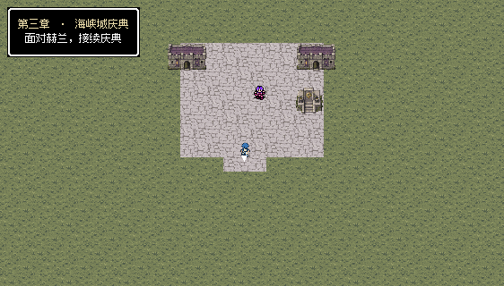
H31
城外旧街与避难前庭使用室外石铺，边缘草地保持。
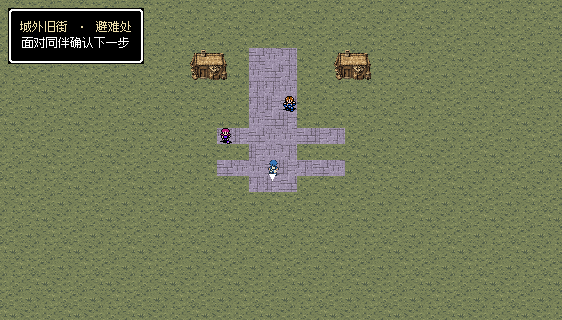
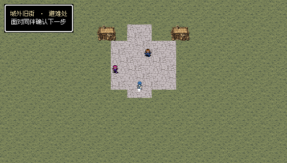
H32
转运站压实土道对应军需大道，仓门前保留室外石台。
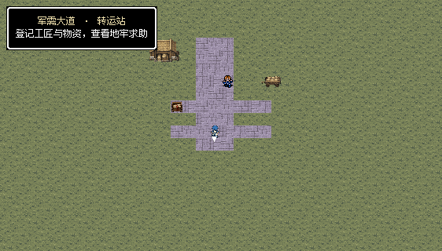
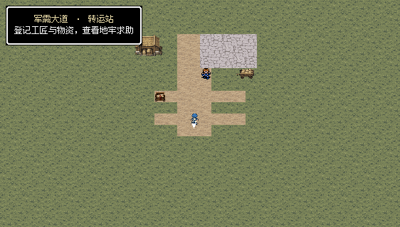
H33
沿海工房为砌石作业平台，岸侧仓库替代船舱，南端木踏板接驳船。
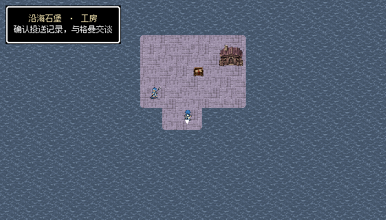
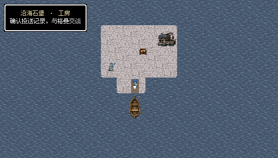
H34
盐路井台采用盐地背景、干土通路与井边石铺；黑昼延续。
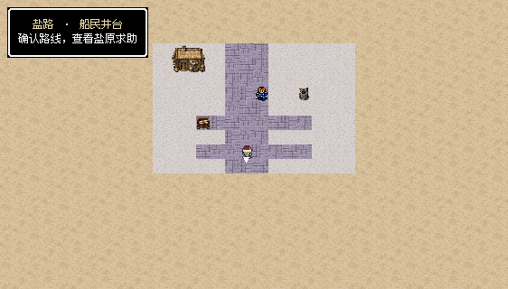
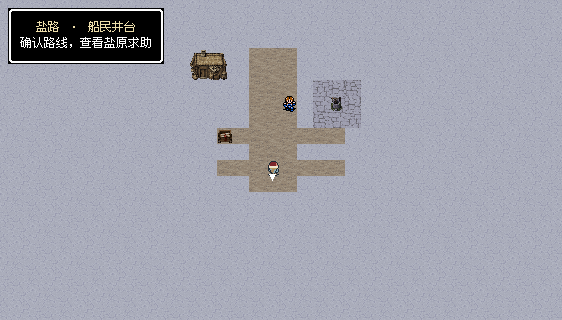
H35
提炼院记录庭的露天砌石、盐土地与冷暗光延续，非室内大厅。
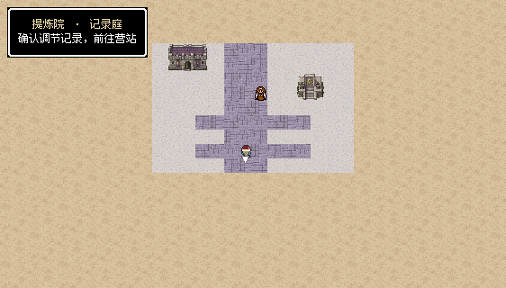
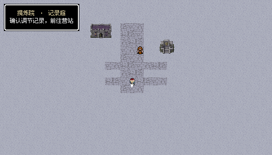
H36
地牢外安置处以山村土路、洞口石台和草地表达，室内在战场剖面牢室。
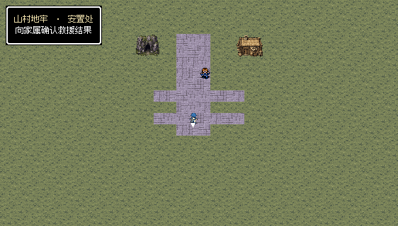
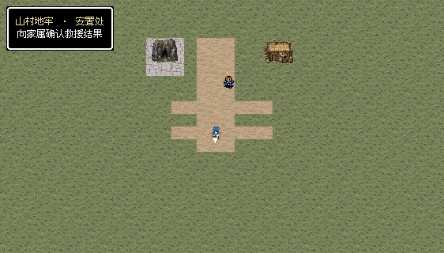
H37
盐原营房安置区用盐地、土路与营房外观，延续冷暗光。
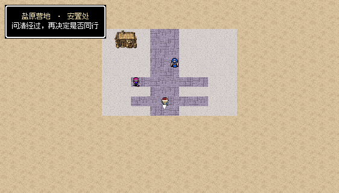
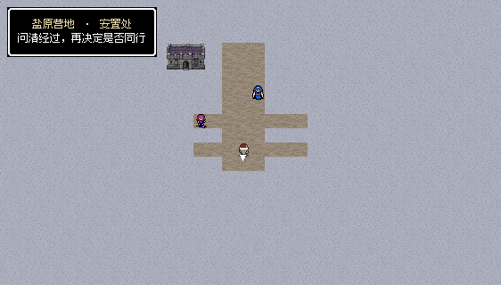
H10
会合营站按大地图沙岸定位，使用沙地与压实营道，补给仓房替代船舱。
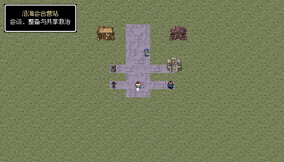
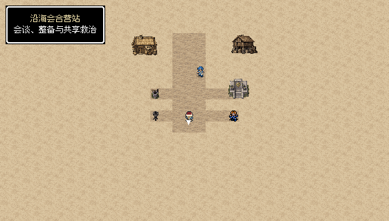
九处据点合计19处可见剧情交互、200次普通按键通过；单独源记录隔离，未修改人物坐标或标记。1194项显示阶段和地面范围检查通过。H10只在第三章采用新沙岸材质，其他章节的共享场景不受覆盖。